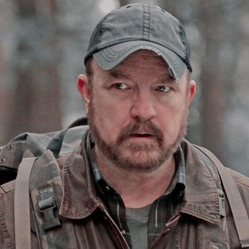

Bobby Singer, interpretado por Jim Beaver, é um caçador veterano e figura paternal para os irmãos Winchester. Ele é uma das figuras mais importantes e constantes na vida dos Winchesters. Bobby é um caçador experiente, com grande conhecimento sobre o sobrenatural, e serve como mentor e amigo para Sam e Dean.
Ao longo da série, Bobby é um aliado crucial para os irmãos, oferecendo suporte tanto emocional quanto prático. Sua habilidade com armas e sua vasta experiência com criaturas sobrenaturais o tornam uma parte fundamental da equipe. Apesar de sua natureza áspera e muitas vezes durona, Bobby tem um grande coração e uma lealdade inabalável aos Winchesters.
Bobby Singer
História de Origem
Habilidades e Poderes
- Conhecimento profundo sobre o sobrenatural
- Habilidade com armas e combate
- Inteligência estratégica e análise
Relações
- Sam Winchester - protegido e amigo
- Dean Winchester - amigo e mentor
- Rufus Turner - amigo caçador